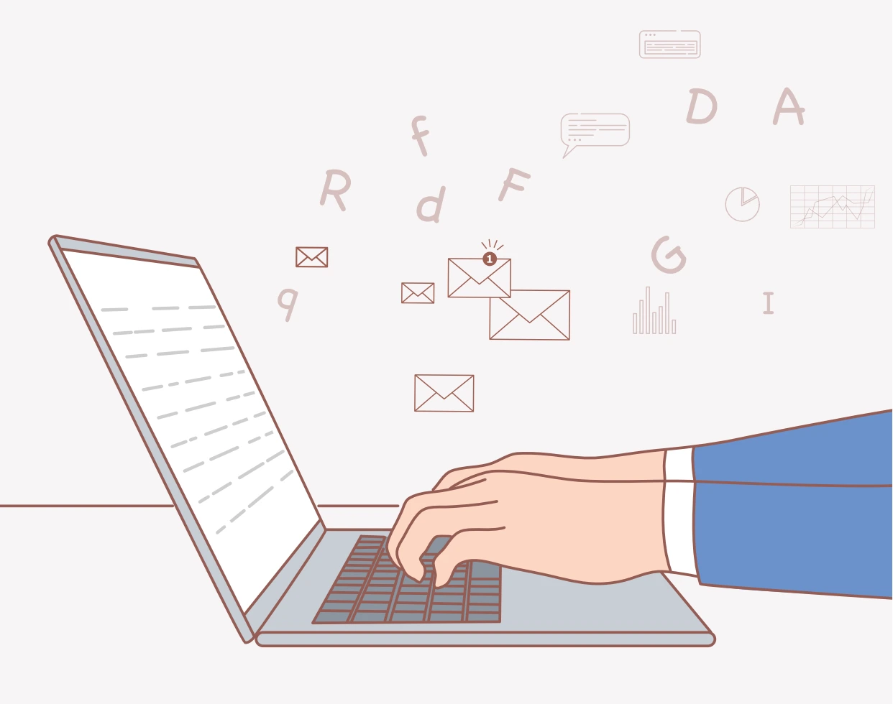

제목과 본문
- 발신자는 소속·팀·이름으로 분명히 표시합니다.
- 제목은 내용을 압축하고, 필요하면 [중요]·[보고서]·[긴급] 등의 표시를 활용합니다.
- 첫인사 뒤에 글의 목적을 분명히 밝히고 본문을 간단명료하게 씁니다.
- 중요한 내용은 굵은 글씨나 색상으로 구분합니다.
- 끝인사와 함께 업무 담당자를 알 수 있는 서명을 기재합니다.

첨부파일 안내
첨부파일이 있다면 본문에도 파일명과 목록을 적습니다. 문서 제목에 필요에 따라 버전명·날짜·작성자를 덧붙여 구분합니다.
부서명 + 문서 제목
부서 기준으로 파일을 구분하는 방법입니다.
인사지원팀_6월 교육비
작성자 + 문서 제목
작성자 기준으로 파일을 구분하는 방법입니다.
인사지원팀 김자생_6월 교육비
문서 종류 + 문서 제목
문서의 성격을 먼저 표시하는 방법입니다.
HRD_6월 교육비
발송 전 확인
- 수신자와 관련 업무 담당자가 정확한가요?
- 첫인사·끝인사·서명이 있나요?
- 본문에 첨부파일을 안내했고 실제로 첨부했나요?
- 맞춤법과 오탈자를 확인했나요?
- 본문이 불필요하게 길지 않은가요?